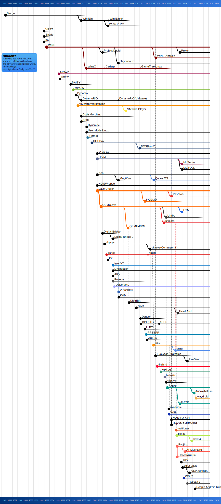
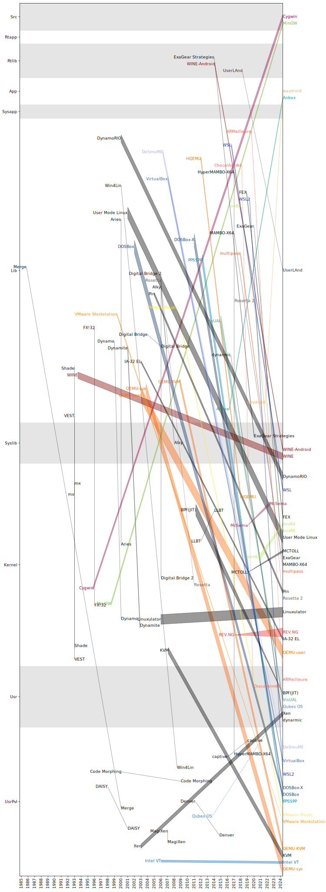

RunXonY
This repository and the corresponding Github Pages tracks the compatibility technologies, like emulators, simulators, translators, virtual machines, and any related technologies that can run X (guest) on Y (host).
X and Y could be soft, hardware, and any layers in computer architecture.
üòÉ Feel free to add new runXonY entries by opening issues or pulling requests.
Timeline

X-Y Relplot

Alky
- Date: 2006.01.01 - 2008.01.01
- License: LGPL
- Development: Dev.Falling_Leaf_System
- Category: Term.SCL
| Name | Run X | On Y |
|---|---|---|
| Alky | NO_SYSCALL-X86-USR | MACOS-X86-USR, LINUX-X86-USR |
TODO
Anbox
- Date: 2016.04.11 - today
- License: GPL3
| Name | Run X | On Y |
|---|---|---|
| Anbox | ANDROID_RUNTIME-LINUX_ANDROID-X86_64-USR | LINUX-X86_64-USR |
| Anbox | ANDROID_RUNTIME-LINUX_ANDROID-AARCH64-USR | LINUX-AARCH64-USR |
TODO
Anbox-halium
- Date: 2021.04.16 - 2021.08.27
- Parent: Anbox
| Name | Run X | On Y |
|---|---|---|
| Anbox-halium |
TODO
Aries
- Date: 2000.01.01 - 2000.01.01
- Development: Dev.HP
- Category: Term.UBT
| Name | Run X | On Y |
|---|---|---|
| Aries | UNIX-PARISC-USR | UNIX-IA64-USR |
TODO
Arm-js
- Date: 2012.05.20 - 2014.02.11
| Name | Run X | On Y |
|---|---|---|
| Arm-js | ARM-USR_PVL |
TODO
ARMeilleure
- Date: 2019.08.09 - today
- Parent: Ryujinx
| Name | Run X | On Y |
|---|---|---|
| ARMeilleure | AARCH64-USR | LINUX-X86_64-USR, WINDOWS-X86_64-USR |
TODO
box64
- Date: 2020.12.01 - today
- Category: Term.UBL
- Parent: box86
| Name | Run X | On Y |
|---|---|---|
| box64-DynaRec | LINUX-X86_64-USR | LINUX-AARCH64-USR |
| box64-without-DynaRec | LINUX-X86_64-USR | LINUX-AARCH64-USR, LINUX-LA-USR, LINUX-RISCV64-USR, LINUX-POWERPC64-USR, LINUX-X86_64-USR |
TODO
box86
- Date: 2018.01.01 - today
- Category: Term.UBL
| Name | Run X | On Y |
|---|---|---|
| box86 | LINUX-X86-USR | LINUX-AARCH32-USR |
TODO
BPF(JIT)
- Date: 2011.04.01 - today
- Renames: eBPF(2014.09.04),
| Name | Run X | On Y |
|---|---|---|
| BPF(JIT) | BPF-USR | LINUX-XTENSA-USR, LINUX-I686-USR, LINUX-SPARC64-USR, LINUX-MIPS32-USR, LINUX-I486-USR, LINUX-ALPHA-USR, LINUX-NIOS2-USR, LINUX-I386-USR, LINUX-IA64-USR, LINUX-ARMV8M-USR, LINUX-ARMV8R-USR, LINUX-POWERPC64-USR, LINUX-HEXAGON-USR, LINUX-ARMV7A-USR, LINUX-AARCH32-USR, LINUX-S390-USR, LINUX-MIPSII-USR, LINUX-LA-USR, LINUX-ARMV6M-USR, LINUX-MIPSIII-USR, LINUX-MIPSV-USR, LINUX-ARC-USR, LINUX-SH-USR, LINUX-MICROBLAZE-USR, LINUX-CSKY-USR, LINUX-ARMV7L-USR, LINUX-AARCH64-USR, LINUX-ARMV7R-USR, LINUX-ARM-USR, LINUX-ARMV7M-USR, LINUX-MIPSI-USR, LINUX-MIPS64-USR, LINUX-ARMV5TEL-USR, LINUX-I586-USR, LINUX-ARMV8A-USR, LINUX-X86_64-USR, LINUX-ARMV6L-USR, LINUX-M68K-USR, LINUX-PARISC-USR, LINUX-X86-USR, LINUX-SPARC-USR, LINUX-OPENRISC-USR, LINUX-RISCV64-USR, LINUX-MIPSIV-USR, LINUX-POWERPC-USR, LINUX-RISCV32-USR |
TODO
browsix
- Date: 2015.09.26 - today
| Name | Run X | On Y |
|---|---|---|
| browsix |
TODO
bsnes
- Date: 2004.10.14 - today
- Renames: higan(2012.08.09),
| Name | Run X | On Y |
|---|---|---|
| bsnes | BSD-X86_64-USR, LINUX-X86_64-USR, MACOS-X86_64-USR, WINDOWS-X86_64-USR |
TODO
captive
- Date: 2016.01.01 - 2019.01.01
- Category: Term.V1B
| Name | Run X | On Y |
|---|---|---|
| captive | AARCH32-USR_PVL | X86_64-USR_PVL |
TODO
ChocolArm64
- Date: 2018.02.21 - 2019.11.01
- License: Unlicense
- Parent: Ryujinx
| Name | Run X | On Y |
|---|---|---|
| ChocolArm64 | AARCH64-USR | LINUX-X86_64-USR, WINDOWS-X86_64-USR |
TODO
citra
- Date: 2013.08.30 - today
| Name | Run X | On Y |
|---|---|---|
| citra |
TODO
Code Morphing
- Date: 2000.01.01 - 2009.01.01
- Development: Dev.Transmeta
- Category: Term.V1B
| Name | Run X | On Y |
|---|---|---|
| Code Morphing | X86-USR_PVL | CRUSOE_VLIW-USR_PVL |
TODO
Cygwin
- Date: 1995.10.18 - today
- Category: Term.CPL
| Name | Run X | On Y |
|---|---|---|
| Cygwin | CPP_SRC-MACOS_SYSLIBS, C_SRC-LINUX_SYSLIBS, C_SRC-BSD_SYSLIBS, C_SRC-MACOS_SYSLIBS, CPP_SRC-BSD_SYSLIBS, CPP_SRC-LINUX_SYSLIBS | WINDOWS-AARCH64-USR, WINDOWS-X86-USR, WINDOWS-X86_64-USR |
TODO
DAISY
- Date: 1998.01.01 - 2001.01.01
- Development: Dev.IBM
- Category: Term.V1B
| Name | Run X | On Y |
|---|---|---|
| DAISY | POWERPC-USR_PVL | DAISY_VLIW-USR_PVL |
TODO
Deepin Android Runtime
- Date: 2021.06.29 - today
- Development: Dev.统信
| Name | Run X | On Y |
|---|---|---|
| Deepin Android Runtime |
TODO
Denver
- Date: 2011.03.04 - 2014.10.15
- Development: Dev.Nvidia
- Category: Term.V1B
| Name | Run X | On Y |
|---|---|---|
| Denver | AARCH64-USR_PVL | DENVER_VLIW-USR_PVL |
TODO
DeSmuME
- Date: 2006.04.06 - today
- License: GPL2
- Category: Term.V2B
| Name | Run X | On Y |
|---|---|---|
| DeSmuME | AARCH32-USR_PVL | LINUX-X86_64-USR, LINUX-X86-USR, WINDOWS-X86-USR, MACOS-X86-USR, MACOS-X86_64-USR, WINDOWS-X86_64-USR |
TODO
Digital Bridge
- Date: 2004.01.01 - 2006.01.01
- Development: Dev.武成岗组
- Category: Term.UBL
| Name | Run X | On Y |
|---|---|---|
| Digital Bridge | LINUX-X86-USR | LINUX-MIPS32-USR |
TODO
Digital Bridge 2
- Date: 2006.01.01 - 2006.01.01
- Development: Dev.武成岗组
- Category: Term.UBL
- Parent: Digital Bridge
| Name | Run X | On Y |
|---|---|---|
| Digital Bridge 2 | LINUX-X86-USR | LINUX-MIPS32-USR |
TODO
DistriBit
- Date: 2009.01.01 - 2012.01.01
- Development: Dev.上交
| Name | Run X | On Y |
|---|---|---|
| DistriBit |
TODO
DOSBox
- Date: 2002.01.01 - today
- Category: Term.V2B
| Name | Run X | On Y |
|---|---|---|
| DOSBox | X86-USR_PVL | MACOS-AARCH64-USR, MACOS-X86_64-USR |
| DOSBox | X86-USR_PVL | LINUX-ARMV8A-USR, LINUX-X86-USR, LINUX-AARCH64-USR, LINUX-ALPHA-USR, LINUX-ARMV7R-USR, LINUX-RISCV64-USR, LINUX-I386-USR, LINUX-NIOS2-USR, LINUX-MIPS32-USR, LINUX-ARMV8M-USR, LINUX-IA64-USR, LINUX-XTENSA-USR, LINUX-MIPSIV-USR, LINUX-X86_64-USR, LINUX-ARMV7A-USR, LINUX-RISCV32-USR, LINUX-S390-USR, LINUX-ARC-USR, LINUX-ARMV5TEL-USR, LINUX-I486-USR, LINUX-M68K-USR, LINUX-MIPSI-USR, LINUX-ARMV6M-USR, LINUX-POWERPC64-USR, LINUX-POWERPC-USR, LINUX-ARMV6L-USR, LINUX-MIPS64-USR, LINUX-OPENRISC-USR, LINUX-CSKY-USR, LINUX-ARMV8R-USR, LINUX-MIPSII-USR, LINUX-I686-USR, LINUX-LA-USR, LINUX-ARMV7L-USR, LINUX-ARMV7M-USR, LINUX-ARM-USR, LINUX-AARCH32-USR, LINUX-MIPSIII-USR, LINUX-SPARC64-USR, LINUX-HEXAGON-USR, LINUX-MICROBLAZE-USR, LINUX-PARISC-USR, LINUX-SH-USR, LINUX-MIPSV-USR, LINUX-SPARC-USR, LINUX-I586-USR |
| DOSBox | X86-USR_PVL | WINDOWS-AARCH64-USR, WINDOWS-X86-USR, WINDOWS-X86_64-USR |
| DOSBox | X86-USR_PVL | BSD-I386-USR, BSD-SPARC-USR, BSD-X86_64-USR, BSD-POWERPC64-USR, BSD-MIPSIII-USR, BSD-I486-USR, BSD-MIPSIV-USR, BSD-MIPS32-USR, BSD-X86-USR, BSD-ARMV6L-USR, BSD-ARM-USR, BSD-ARMV7A-USR, BSD-AARCH64-USR, BSD-MIPSI-USR, BSD-PARISC-USR, BSD-MIPSV-USR, BSD-ALPHA-USR, BSD-MIPSII-USR, BSD-MIPS64-USR, BSD-I586-USR, BSD-RISCV64-USR, BSD-ARMV7L-USR, BSD-POWERPC-USR, BSD-ARMV6M-USR, BSD-RISCV32-USR, BSD-ARMV7M-USR, BSD-SPARC64-USR, BSD-I686-USR, BSD-ARMV7R-USR |
TODO
DOSBox-X
- Date: 2011.01.01 - today
- Category: Term.V2B
- Parent: DOSBox
| Name | Run X | On Y |
|---|---|---|
| DOSBox-X | X86-USR_PVL | MACOS-AARCH64-USR, MACOS-X86_64-USR |
| DOSBox-X | X86-USR_PVL | LINUX-ARMV8A-USR, LINUX-X86-USR, LINUX-AARCH64-USR, LINUX-ALPHA-USR, LINUX-ARMV7R-USR, LINUX-RISCV64-USR, LINUX-I386-USR, LINUX-NIOS2-USR, LINUX-MIPS32-USR, LINUX-ARMV8M-USR, LINUX-IA64-USR, LINUX-XTENSA-USR, LINUX-MIPSIV-USR, LINUX-X86_64-USR, LINUX-ARMV7A-USR, LINUX-RISCV32-USR, LINUX-S390-USR, LINUX-ARC-USR, LINUX-ARMV5TEL-USR, LINUX-I486-USR, LINUX-M68K-USR, LINUX-MIPSI-USR, LINUX-ARMV6M-USR, LINUX-POWERPC64-USR, LINUX-POWERPC-USR, LINUX-ARMV6L-USR, LINUX-MIPS64-USR, LINUX-OPENRISC-USR, LINUX-CSKY-USR, LINUX-ARMV8R-USR, LINUX-MIPSII-USR, LINUX-I686-USR, LINUX-LA-USR, LINUX-ARMV7L-USR, LINUX-ARMV7M-USR, LINUX-ARM-USR, LINUX-AARCH32-USR, LINUX-MIPSIII-USR, LINUX-SPARC64-USR, LINUX-HEXAGON-USR, LINUX-MICROBLAZE-USR, LINUX-PARISC-USR, LINUX-SH-USR, LINUX-MIPSV-USR, LINUX-SPARC-USR, LINUX-I586-USR |
| DOSBox-X | X86-USR_PVL | WINDOWS-AARCH64-USR, WINDOWS-X86-USR, WINDOWS-X86_64-USR |
| DOSBox-X | X86-USR_PVL | BSD-I386-USR, BSD-SPARC-USR, BSD-X86_64-USR, BSD-POWERPC64-USR, BSD-MIPSIII-USR, BSD-I486-USR, BSD-MIPSIV-USR, BSD-MIPS32-USR, BSD-X86-USR, BSD-ARMV6L-USR, BSD-ARM-USR, BSD-ARMV7A-USR, BSD-AARCH64-USR, BSD-MIPSI-USR, BSD-PARISC-USR, BSD-MIPSV-USR, BSD-ALPHA-USR, BSD-MIPSII-USR, BSD-MIPS64-USR, BSD-I586-USR, BSD-RISCV64-USR, BSD-ARMV7L-USR, BSD-POWERPC-USR, BSD-ARMV6M-USR, BSD-RISCV32-USR, BSD-ARMV7M-USR, BSD-SPARC64-USR, BSD-I686-USR, BSD-ARMV7R-USR |
TODO
Dynamite
- Date: 2001.01.01 - 2002.11.01
- Development: Dev.Transitive_Apple
- Category: Term.UBL
| Name | Run X | On Y |
|---|---|---|
| Dynamite | LINUX-AARCH32-USR | LINUX-MIPS32-USR |
| Dynamite | LINUX-X86-USR | LINUX-MIPS32-USR |
| Dynamite | LINUX-X86-USR | LINUX-MIPS32-USR |
| Dynamite | LINUX-POWERPC-USR | LINUX-X86-USR |
| Dynamite | LINUX-AARCH32-USR | LINUX-MIPS32-USR |
| Dynamite | LINUX-POWERPC-USR | LINUX-X86-USR |
TODO
Dynamo
- Date: 1999.01.01 - 2000.01.01
- Development: Dev.HP
- Category: Term.OPT
| Name | Run X | On Y |
|---|---|---|
| Dynamo | UNIX-PARISC-USR | UNIX-PARISC-USR |
TODO
DynamoRIO
- Date: 2000.01.01 - today
- Development: Dev.HP
- Category: Term.I_O
- Parent: Dynamo
- Renames: DynamoRIO(VMware)(2007.01.01),
| Name | Run X | On Y |
|---|---|---|
| DynamoRIO-MACOS-AARCH32 | MACOS-AARCH32-USR | MACOS-AARCH32-USR |
| DynamoRIO-WINDOWS-AARCH64 | WINDOWS-AARCH64-USR | WINDOWS-AARCH64-USR |
| DynamoRIO-LINUX-AARCH32 | LINUX-AARCH32-USR | LINUX-AARCH32-USR |
| DynamoRIO-LINUX-AARCH64 | LINUX-AARCH64-USR | LINUX-AARCH64-USR |
| DynamoRIO-MACOS-AARCH64 | MACOS-AARCH64-USR | MACOS-AARCH64-USR |
| DynamoRIO-WINDOWS-X86_64 | WINDOWS-X86_64-USR | WINDOWS-X86_64-USR |
| DynamoRIO-WINDOWS-X86 | WINDOWS-X86-USR | WINDOWS-X86-USR |
| DynamoRIO-MACOS-X86 | MACOS-X86-USR | MACOS-X86-USR |
| DynamoRIO-MACOS-X86_64 | MACOS-X86_64-USR | MACOS-X86_64-USR |
| DynamoRIO-WINDOWS-AARCH32 | WINDOWS-AARCH32-USR | WINDOWS-AARCH32-USR |
| DynamoRIO-LINUX-X86 | LINUX-X86-USR | LINUX-X86-USR |
| DynamoRIO-LINUX-X86_64 | LINUX-X86_64-USR | LINUX-X86_64-USR |
TODO
dynarmic
- Date: 2016.07.01 - today
| Name | Run X | On Y |
|---|---|---|
| dynarmic | AARCH32-USR, AARCH64-USR | KERNELS-X86_64-USR |
TODO
edk2-sagit
- Date: 2019.02.22 - 2020.05.25
| Name | Run X | On Y |
|---|---|---|
| edk2-sagit |
TODO
edk2-sdm845
- Date: 2020.05.25 - today
- Parent: edk2-sagit
| Name | Run X | On Y |
|---|---|---|
| edk2-sdm845 |
TODO
ExaGear
- Date: 2020.01.01 - today
- Development: Dev.Eltech_Huawei
- Category: Term.UBT
- Parent: ExaGear Strategies
| Name | Run X | On Y |
|---|---|---|
| ExaGear | LINUX-X86_64-USR, LINUX-X86-USR | LINUX-AARCH64-USR |
TODO
ExaGear Strategies
- Date: 2014.01.01 - 2020.01.01
- Development: Dev.Eltech_Russia
| Name | Run X | On Y |
|---|---|---|
| ExaGear Strategies | NO_SYSCALL-X86-USR, NO_SYSCALL-X86_64-USR | ANDROID_RUNTIME-LINUX_ANDROID-AARCH64-USR |
TODO
FEX
- Date: 2018.11.16 - today
- License: MIT
- Category: Term.UBL
| Name | Run X | On Y |
|---|---|---|
| FEX | LINUX-X86_64-USR, LINUX-X86-USR | LINUX-X86_64-USR, LINUX-AARCH64-USR |
TODO
firebird
- Date: 2014.04.26 - today
- License: GPL3
| Name | Run X | On Y |
|---|---|---|
| firebird |
TODO
FX!32
- Date: 1996.01.01 - 1996.01.01
- Development: Dev.Digital
- Category: Term.UBT
| Name | Run X | On Y |
|---|---|---|
| FX!32 | WINDOWS_NT4_0-X86-USR | WINDOWS_NT4_0-ALPHA-USR |
TODO
HQEMU
- Date: 2012.01.01 - 2018.01.01
- Development: Dev.台清华
- Category: Term.UBT
- Parent: QEMU-user
| Name | Run X | On Y |
|---|---|---|
| HQEMU | LINUX-ARM-USR, LINUX-AARCH64-USR, LINUX-X86_64-USR, LINUX-X86-USR | LINUX-X86_64-USR, LINUX-X86-USR, LINUX-AARCH64-USR, LINUX-POWERPC64-USR |
TODO
HyperMAMBO-X64
- Date: 2017.01.01 - 2017.01.01
- Development: Dev.Manchester
- Category: Term.V2B
- Parent: MAMBO-X64
| Name | Run X | On Y |
|---|---|---|
| HyperMAMBO-X64 | AARCH32-USR_PVL | LINUX-AARCH64-USR |
TODO
IA-32 EL
- Date: 2003.01.01 - today
- Category: Term.UBT
| Name | Run X | On Y |
|---|---|---|
| IA-32 EL | LINUX-X86-USR | LINUX-IA64-USR |
| IA-32 EL | WINDOWS-X86-USR | WINDOWS-IA64-USR |
TODO
Intel VT
- Date: 2006.01.01 - today
- Development: Dev.Intel
- Category: Term.V1_
| Name | Run X | On Y |
|---|---|---|
| Intel VT | X86-USR_PVL | X86-USR_PVL |
| Intel VT | X86_64-USR_PVL | X86_64-USR_PVL |
TODO
KVM
- Date: 2007.02.05 - today
| Name | Run X | On Y |
|---|---|---|
| KVM | POWERPC64-USR_PVL | LINUX-POWERPC64-USR_PVL |
| KVM | X86-USR_PVL | LINUX-X86-USR_PVL |
| KVM | IA64-USR_PVL | LINUX-IA64-USR_PVL |
| KVM | S390-USR_PVL | LINUX-S390-USR_PVL |
| KVM | AARCH64-USR_PVL | LINUX-AARCH64-USR_PVL |
| KVM | LA-USR_PVL | LINUX-LA-USR_PVL |
| KVM | X86_64-USR_PVL | LINUX-X86_64-USR_PVL |
| KVM | MIPS64-USR_PVL | LINUX-MIPS64-USR_PVL |
TODO
Limbo
- Date: 2016.01.01 - 2022.01.01
- Parent: QEMU-sys
| Name | Run X | On Y |
|---|---|---|
| Limbo | ANDROID_RUNTIME-LINUX_ANDROID-X86_64-USR, ANDROID_RUNTIME-LINUX_ANDROID-AARCH64-USR |
TODO
Linuxulator
- Date: 2006.01.01 - today
| Name | Run X | On Y |
|---|---|---|
| Linuxulator-I386 | LINUX-I386-USR | BSD-I386-USR |
| Linuxulator-X86 | LINUX-X86-USR | BSD-X86-USR |
| Linuxulator-I486 | LINUX-I486-USR | BSD-I486-USR |
| Linuxulator-I586 | LINUX-I586-USR | BSD-I586-USR |
| Linuxulator-X86_64 | LINUX-X86_64-USR | BSD-X86_64-USR |
| Linuxulator-ARM | LINUX-ARM-USR | BSD-ARM-USR |
| Linuxulator-I686 | LINUX-I686-USR | BSD-I686-USR |
| Linuxulator-ARMV6L | LINUX-ARMV6L-USR | BSD-ARMV6L-USR |
| Linuxulator-ARMV6M | LINUX-ARMV6M-USR | BSD-ARMV6M-USR |
| Linuxulator-ARMV7L | LINUX-ARMV7L-USR | BSD-ARMV7L-USR |
| Linuxulator-ARMV7M | LINUX-ARMV7M-USR | BSD-ARMV7M-USR |
| Linuxulator-ARMV7A | LINUX-ARMV7A-USR | BSD-ARMV7A-USR |
| Linuxulator-AARCH64 | LINUX-AARCH64-USR | BSD-AARCH64-USR |
| Linuxulator-POWERPC | LINUX-POWERPC-USR | BSD-POWERPC-USR |
| Linuxulator-POWERPC64 | LINUX-POWERPC64-USR | BSD-POWERPC64-USR |
| Linuxulator-ARMV7R | LINUX-ARMV7R-USR | BSD-ARMV7R-USR |
| Linuxulator-MIPSIV | LINUX-MIPSIV-USR | BSD-MIPSIV-USR |
| Linuxulator-RISCV32 | LINUX-RISCV32-USR | BSD-RISCV32-USR |
| Linuxulator-SPARC | LINUX-SPARC-USR | BSD-SPARC-USR |
| Linuxulator-MIPSIII | LINUX-MIPSIII-USR | BSD-MIPSIII-USR |
| Linuxulator-MIPSII | LINUX-MIPSII-USR | BSD-MIPSII-USR |
| Linuxulator-MIPSI | LINUX-MIPSI-USR | BSD-MIPSI-USR |
| Linuxulator-MIPSV | LINUX-MIPSV-USR | BSD-MIPSV-USR |
| Linuxulator-MIPS64 | LINUX-MIPS64-USR | BSD-MIPS64-USR |
| Linuxulator-MIPS32 | LINUX-MIPS32-USR | BSD-MIPS32-USR |
| Linuxulator-RISCV64 | LINUX-RISCV64-USR | BSD-RISCV64-USR |
| Linuxulator-SPARC64 | LINUX-SPARC64-USR | BSD-SPARC64-USR |
TODO
LLBT
- Date: 2012.01.01 - 2014.01.01
- Development: Dev.台交大
- Category: Term.SBT
| Name | Run X | On Y |
|---|---|---|
| LLBT | LINUX-ARM-USR | LINUX-LLVM_IR-USR |
TODO
LLVM
- Date: 2003.01.01 - today
| Name | Run X | On Y |
|---|---|---|
| LLVM |
TODO
MagiXen
- Date: 2007.01.01 - 2007.01.01
- Development: Dev.HP
- Category: Term.V1B
- Parent: Xen
| Name | Run X | On Y |
|---|---|---|
| MagiXen | X86-USR_PVL | IA64-USR_PVL |
TODO
MAMBO-X64
- Date: 2017.01.01 - today
- Development: Dev.Manchester
- Category: Term.UBT
| Name | Run X | On Y |
|---|---|---|
| MAMBO-X64 | LINUX-AARCH32-USR | LINUX-AARCH64-USR |
TODO
McSema
- Date: 2019.01.01 - 2022.04.26
- Category: Term.SBT
- Parent: LLVM
| Name | Run X | On Y |
|---|---|---|
| McSema | LINUX-AARCH64-USR, LINUX-X86_64-USR, LINUX-X86-USR | LINUX-LLVM_IR-USR |
TODO
MCTOLL
- Date: 2019.01.01 - today
- Development: Dev.Microsoft
- Parent: LLVM
| Name | Run X | On Y |
|---|---|---|
| MCTOLL | LINUX-AARCH64-USR, LINUX-X86_64-USR | LINUX-LLVM_IR-USR |
TODO
Merge
- Date: 1985.10.09 - 2000.01.01
- Category: Term.V2_
| Name | Run X | On Y |
|---|---|---|
| Merge | I386-USR_PVL | SCO_UNIX-I386-USR |
TODO
MinGW
- Date: 1998.07.01 - today
- Category: Term.CPL
| Name | Run X | On Y |
|---|---|---|
| MinGW | CPP_SRC-WINDOWS_SYSLIBS, C_SRC-WINDOWS_SYSLIBS | WINDOWS-AARCH64-USR, WINDOWS-X86-USR, WINDOWS-X86_64-USR |
TODO
multipass
- Date: 2017.12.07 - today
- License: GPL3
- Development: Dev.Canonical
- Category: Term.V2_
| Name | Run X | On Y |
|---|---|---|
| multipass | LINUX-X86_64-USR | MACOS-X86_64-USR, LINUX-X86_64-USR, WINDOWS-X86_64-USR |
TODO
mx
- Date: 1993.01.01 - 1993.01.01
- Development: Dev.Digital
| Name | Run X | On Y |
|---|---|---|
| mx | ULTRIX-MIPS32-USR | TRU64-ALPHA-USR |
TODO
NDISWrapper
- Date: 2003.01.01 - today
| Name | Run X | On Y |
|---|---|---|
| NDISWrapper |
TODO
Pin
- Date: 2005.01.01 - today
- Development: Dev.Intel
- Category: Term.INS
| Name | Run X | On Y |
|---|---|---|
| Pin | WINDOWS-X86-USR | WINDOWS-X86-USR |
| Pin | MACOS-X86-USR | MACOS-X86-USR |
| Pin | LINUX-X86-USR | LINUX-X86-USR |
TODO
playonlinux
- Date: 2007.01.01 - today
- Parent: WINE
| Name | Run X | On Y |
|---|---|---|
| playonlinux |
TODO
PPSSPP
- Date: 2012.03.25 - today
- License: GPL2
- Category: Term.V2B
| Name | Run X | On Y |
|---|---|---|
| PPSSPP | MIPSIII-USR_PVL | ANDROID_RUNTIME-LINUX_ANDROID-X86_64-USR, ANDROID_RUNTIME-LINUX_ANDROID-AARCH64-USR |
| PPSSPP | MIPSIII-USR_PVL | LINUX-ARMV8A-USR, LINUX-X86-USR, LINUX-AARCH64-USR, LINUX-ALPHA-USR, LINUX-ARMV7R-USR, LINUX-RISCV64-USR, LINUX-I386-USR, LINUX-NIOS2-USR, LINUX-MIPS32-USR, LINUX-ARMV8M-USR, LINUX-IA64-USR, LINUX-XTENSA-USR, LINUX-MIPSIV-USR, LINUX-X86_64-USR, LINUX-ARMV7A-USR, LINUX-RISCV32-USR, LINUX-S390-USR, LINUX-ARC-USR, LINUX-ARMV5TEL-USR, LINUX-I486-USR, LINUX-M68K-USR, LINUX-MIPSI-USR, LINUX-ARMV6M-USR, LINUX-POWERPC64-USR, LINUX-POWERPC-USR, LINUX-ARMV6L-USR, LINUX-MIPS64-USR, LINUX-OPENRISC-USR, LINUX-CSKY-USR, LINUX-ARMV8R-USR, LINUX-MIPSII-USR, LINUX-I686-USR, LINUX-LA-USR, LINUX-ARMV7L-USR, LINUX-ARMV7M-USR, LINUX-ARM-USR, LINUX-AARCH32-USR, LINUX-MIPSIII-USR, LINUX-SPARC64-USR, LINUX-HEXAGON-USR, LINUX-MICROBLAZE-USR, LINUX-PARISC-USR, LINUX-SH-USR, LINUX-MIPSV-USR, LINUX-SPARC-USR, LINUX-I586-USR |
| PPSSPP | MIPSIII-USR_PVL | MACOS-AARCH64-USR, MACOS-X86_64-USR |
| PPSSPP | MIPSIII-USR_PVL | WINDOWS-AARCH64-USR, WINDOWS-X86-USR, WINDOWS-X86_64-USR |
TODO
Project David
- Date: 2004.01.01 - 2004.01.01
- Development: Dev.SpecOps_Labs
- Parent: WINE
| Name | Run X | On Y |
|---|---|---|
| Project David |
TODO
proot
- Date: 2010.05.22 - today
| Name | Run X | On Y |
|---|---|---|
| proot |
TODO
Proton
- Date: 2018.08.21 - today
- Development: Dev.Valve
- Parent: WINE
| Name | Run X | On Y |
|---|---|---|
| Proton |
TODO
QEMU-KVM
- Date: 2008.11.06 - today
- Category: Term.V2_
- Parent: QEMU-sys
| Name | Run X | On Y |
|---|---|---|
| QEMU-KVM | AARCH64-USR_PVL | LINUX-AARCH64-USR |
| QEMU-KVM | IA64-USR_PVL | LINUX-IA64-USR |
| QEMU-KVM | LA-USR_PVL | LINUX-LA-USR |
| QEMU-KVM | POWERPC64-USR_PVL | LINUX-POWERPC64-USR |
| QEMU-KVM | X86-USR_PVL | LINUX-X86-USR |
| QEMU-KVM | X86_64-USR_PVL | LINUX-X86_64-USR |
| QEMU-KVM | S390-USR_PVL | LINUX-S390-USR |
| QEMU-KVM | MIPS64-USR_PVL | LINUX-MIPS64-USR |
TODO
QEMU-sys
- Date: 2003.10.01 - today
- License: IR
- Category: Term.V2B
- Parent: QEMU-user
| Name | Run X | On Y |
|---|---|---|
| QEMU-sys-BSD | TRICORE-USR_PVL, M68K-USR_PVL, HEXAGON-USR_PVL, CRIS-USR_PVL, SH-USR_PVL, ARM-USR_PVL, AARCH64-USR_PVL, RX-USR_PVL, RISCV64-USR_PVL, MIPS64-USR_PVL, OPENRISC-USR_PVL, MIPS32-USR_PVL, NIOS2-USR_PVL, AVR-USR_PVL, PARISC-USR_PVL, X86-USR_PVL, SPARC-USR_PVL, POWERPC-USR_PVL, ALPHA-USR_PVL, XTENSA-USR_PVL, S390-USR_PVL, MICROBLAZE-USR_PVL, X86_64-USR_PVL | BSD-ARM-USR, BSD-MIPS64-USR, BSD-SPARC-USR, BSD-X86_64-USR, BSD-X86-USR, BSD-POWERPC-USR, BSD-MIPS32-USR, BSD-RISCV64-USR, BSD-AARCH64-USR |
| QEMU-sys-WINDOWS | TRICORE-USR_PVL, M68K-USR_PVL, HEXAGON-USR_PVL, CRIS-USR_PVL, SH-USR_PVL, ARM-USR_PVL, AARCH64-USR_PVL, RX-USR_PVL, RISCV64-USR_PVL, MIPS64-USR_PVL, OPENRISC-USR_PVL, MIPS32-USR_PVL, NIOS2-USR_PVL, AVR-USR_PVL, PARISC-USR_PVL, X86-USR_PVL, SPARC-USR_PVL, POWERPC-USR_PVL, ALPHA-USR_PVL, XTENSA-USR_PVL, S390-USR_PVL, MICROBLAZE-USR_PVL, X86_64-USR_PVL | WINDOWS-X86-USR, WINDOWS-AARCH64-USR, WINDOWS-X86_64-USR |
| QEMU-sys-MACOS | TRICORE-USR_PVL, M68K-USR_PVL, HEXAGON-USR_PVL, CRIS-USR_PVL, SH-USR_PVL, ARM-USR_PVL, AARCH64-USR_PVL, RX-USR_PVL, RISCV64-USR_PVL, MIPS64-USR_PVL, OPENRISC-USR_PVL, MIPS32-USR_PVL, NIOS2-USR_PVL, AVR-USR_PVL, PARISC-USR_PVL, X86-USR_PVL, SPARC-USR_PVL, POWERPC-USR_PVL, ALPHA-USR_PVL, XTENSA-USR_PVL, S390-USR_PVL, MICROBLAZE-USR_PVL, X86_64-USR_PVL | MACOS-X86_64-USR, MACOS-AARCH64-USR |
| QEMU-sys-LINUX | TRICORE-USR_PVL, M68K-USR_PVL, HEXAGON-USR_PVL, CRIS-USR_PVL, SH-USR_PVL, ARM-USR_PVL, AARCH64-USR_PVL, RX-USR_PVL, RISCV64-USR_PVL, MIPS64-USR_PVL, OPENRISC-USR_PVL, MIPS32-USR_PVL, NIOS2-USR_PVL, AVR-USR_PVL, PARISC-USR_PVL, X86-USR_PVL, SPARC-USR_PVL, POWERPC-USR_PVL, ALPHA-USR_PVL, XTENSA-USR_PVL, S390-USR_PVL, MICROBLAZE-USR_PVL, X86_64-USR_PVL | LINUX-ARM-USR, LINUX-AARCH64-USR, LINUX-MIPS64-USR, LINUX-SPARC-USR, LINUX-POWERPC-USR, LINUX-S390-USR, LINUX-RISCV64-USR, LINUX-LA-USR, LINUX-MIPS32-USR, LINUX-X86_64-USR, LINUX-X86-USR |
TODO
QEMU-user
- Date: 2003.02.01 - today
- License: IR
- Category: Term.UBT
| Name | Run X | On Y |
|---|---|---|
| QEMU-user-tci-linux | LINUX-XTENSA-USR, LINUX-MIPS32-USR, LINUX-ALPHA-USR, LINUX-NIOS2-USR, LINUX-HEXAGON-USR, LINUX-S390-USR, LINUX-SH-USR, LINUX-MICROBLAZE-USR, LINUX-AARCH64-USR, LINUX-ARM-USR, LINUX-MIPS64-USR, LINUX-X86_64-USR, LINUX-M68K-USR, LINUX-PARISC-USR, LINUX-X86-USR, LINUX-SPARC-USR, LINUX-OPENRISC-USR, LINUX-RISCV64-USR, LINUX-POWERPC-USR | LINUX-ARMV8A-USR, LINUX-SPARC64-USR, LINUX-MIPS64-USR, LINUX-NIOS2-USR, LINUX-CSKY-USR, LINUX-S390-USR, LINUX-MICROBLAZE-USR, LINUX-MIPSIII-USR, LINUX-ARMV8M-USR, LINUX-I386-USR, LINUX-OPENRISC-USR, LINUX-ALPHA-USR, LINUX-MIPSIV-USR, LINUX-I486-USR, LINUX-AARCH32-USR, LINUX-MIPSII-USR, LINUX-PARISC-USR, LINUX-XTENSA-USR, LINUX-I586-USR, LINUX-X86-USR, LINUX-ARMV5TEL-USR, LINUX-ARMV6M-USR, LINUX-SPARC-USR, LINUX-HEXAGON-USR, LINUX-RISCV64-USR, LINUX-LA-USR, LINUX-M68K-USR, LINUX-MIPS32-USR, LINUX-ARMV7A-USR, LINUX-MIPSI-USR, LINUX-SH-USR, LINUX-ARMV8R-USR, LINUX-ARC-USR, LINUX-POWERPC64-USR, LINUX-I686-USR, LINUX-IA64-USR, LINUX-ARM-USR, LINUX-AARCH64-USR, LINUX-ARMV7M-USR, LINUX-POWERPC-USR, LINUX-ARMV6L-USR, LINUX-ARMV7R-USR, LINUX-MIPSV-USR, LINUX-ARMV7L-USR, LINUX-RISCV32-USR, LINUX-X86_64-USR |
| QEMU-user-linux | LINUX-XTENSA-USR, LINUX-MIPS32-USR, LINUX-ALPHA-USR, LINUX-NIOS2-USR, LINUX-HEXAGON-USR, LINUX-S390-USR, LINUX-SH-USR, LINUX-MICROBLAZE-USR, LINUX-AARCH64-USR, LINUX-ARM-USR, LINUX-MIPS64-USR, LINUX-X86_64-USR, LINUX-M68K-USR, LINUX-PARISC-USR, LINUX-X86-USR, LINUX-SPARC-USR, LINUX-OPENRISC-USR, LINUX-RISCV64-USR, LINUX-POWERPC-USR | LINUX-ARM-USR, LINUX-AARCH64-USR, LINUX-MIPS64-USR, LINUX-SPARC-USR, LINUX-POWERPC-USR, LINUX-S390-USR, LINUX-RISCV64-USR, LINUX-LA-USR, LINUX-MIPS32-USR, LINUX-X86_64-USR, LINUX-X86-USR |
| QEMU-user-tci-bsd | BSD-X86_64-USR, BSD-AARCH64-USR, BSD-X86-USR, BSD-POWERPC-USR, BSD-SPARC-USR, BSD-ALPHA-USR, BSD-MIPS64-USR, BSD-RISCV64-USR, BSD-ARM-USR, BSD-MIPS32-USR, BSD-PARISC-USR | BSD-MIPS32-USR, BSD-MIPSV-USR, BSD-AARCH64-USR, BSD-MIPSIV-USR, BSD-ARM-USR, BSD-ARMV6M-USR, BSD-X86-USR, BSD-MIPSII-USR, BSD-ARMV7L-USR, BSD-ARMV7R-USR, BSD-RISCV32-USR, BSD-PARISC-USR, BSD-I486-USR, BSD-ARMV7A-USR, BSD-MIPSIII-USR, BSD-RISCV64-USR, BSD-ARMV6L-USR, BSD-I386-USR, BSD-MIPS64-USR, BSD-ARMV7M-USR, BSD-X86_64-USR, BSD-POWERPC64-USR, BSD-SPARC-USR, BSD-I586-USR, BSD-POWERPC-USR, BSD-SPARC64-USR, BSD-ALPHA-USR, BSD-I686-USR, BSD-MIPSI-USR |
| QEMU-user-bsd | BSD-X86_64-USR, BSD-AARCH64-USR, BSD-X86-USR, BSD-POWERPC-USR, BSD-SPARC-USR, BSD-ALPHA-USR, BSD-MIPS64-USR, BSD-RISCV64-USR, BSD-ARM-USR, BSD-MIPS32-USR, BSD-PARISC-USR | BSD-ARM-USR, BSD-MIPS64-USR, BSD-SPARC-USR, BSD-X86_64-USR, BSD-X86-USR, BSD-POWERPC-USR, BSD-MIPS32-USR, BSD-RISCV64-USR, BSD-AARCH64-USR |
TODO
Qubes OS
- Date: 2013.09.03 - today
- Development: Dev.Invisible_Things_Lab
- Category: Term.P1_
- Parent: Xen
| Name | Run X | On Y |
|---|---|---|
| Qubes OS | X86_64-USR | X86_64-USR_PVL |
TODO
REV.NG
- Date: 2017.01.01 - today
- Category: Term.DSB
- Parent: QEMU-user
| Name | Run X | On Y |
|---|---|---|
| REV.NG | LINUX-XTENSA-USR, LINUX-MIPS32-USR, LINUX-ALPHA-USR, LINUX-NIOS2-USR, LINUX-HEXAGON-USR, LINUX-S390-USR, LINUX-SH-USR, LINUX-MICROBLAZE-USR, LINUX-AARCH64-USR, LINUX-ARM-USR, LINUX-MIPS64-USR, LINUX-X86_64-USR, LINUX-M68K-USR, LINUX-PARISC-USR, LINUX-X86-USR, LINUX-SPARC-USR, LINUX-OPENRISC-USR, LINUX-RISCV64-USR, LINUX-POWERPC-USR | LINUX-LLVM_IR-USR |
TODO
Rosetta
- Date: 2006.01.01 - 2011.01.01
- Development: Dev.Apple
- Category: Term.UBT
| Name | Run X | On Y |
|---|---|---|
| Rosetta | MACOS-POWERPC-USR | MACOS-X86-USR |
TODO
Rosetta 2
- Date: 2020.01.01 - today
- Development: Dev.Apple
- Category: Term.UBT
| Name | Run X | On Y |
|---|---|---|
| Rosetta 2 | MACOS-X86_64-USR | MACOS-AARCH64-USR |
TODO
Ryujinx
- Date: 2018.02.05 - today
- License: MIT
| Name | Run X | On Y |
|---|---|---|
| Ryujinx | LINUX-X86_64-USR, WINDOWS-X86_64-USR |
TODO
Shade
- Date: 1993.01.01 - 1993.01.01
- Development: Dev.SUN
- Category: Term.UBT
| Name | Run X | On Y |
|---|---|---|
| Shade-V8.V8-UNIX | SUNOS5_UNIX-SPARCV8-USR | SUNOS5_UNIX-SPARCV8-USR |
| Shade-V9.V8-UNIX | SUNOS5_UNIX-SPARCV9-USR | SUNOS5_UNIX-SPARCV8-USR |
| Shade-V8.V8-BSD | SUNOS4_BSD-SPARCV8-USR | SUNOS4_BSD-SPARCV8-USR |
| Shade-V9.V8-BSD | SUNOS4_BSD-SPARCV9-USR | SUNOS4_BSD-SPARCV8-USR |
| Shade-MIPS.V8 | SUNOS4_BSD-UMIPSV-USR, SUNOS4_BSD-MIPSI-USR | SUNOS4_BSD-SPARCV8-USR |
TODO
skyeye
- Date: 2004.05.26 - 2013.05.02
| Name | Run X | On Y |
|---|---|---|
| skyeye |
TODO
skyeye(Commercial)
- Date: 2013.01.01 - today
- Development: Dev.迪捷软件
- Parent: skyeye
| Name | Run X | On Y |
|---|---|---|
| skyeye(Commercial) |
TODO
Tarmac
- Date: 2001.03.13 - 2001.03.13
| Name | Run X | On Y |
|---|---|---|
| Tarmac |
TODO
unicorn
- Date: 2015.08.21 - today
- Parent: QEMU-sys
| Name | Run X | On Y |
|---|---|---|
| unicorn |
TODO
User Mode Linux
- Date: 2001.01.01 - today
- Category: Term.SCL
| Name | Run X | On Y |
|---|---|---|
| User Mode Linux-I686 | LINUX-I686-USR | LINUX-I686-USR |
| User Mode Linux-ARMV5TEL | LINUX-ARMV5TEL-USR | LINUX-ARMV5TEL-USR |
| User Mode Linux-I586 | LINUX-I586-USR | LINUX-I586-USR |
| User Mode Linux-I386 | LINUX-I386-USR | LINUX-I386-USR |
| User Mode Linux-I486 | LINUX-I486-USR | LINUX-I486-USR |
| User Mode Linux-ARMV6L | LINUX-ARMV6L-USR | LINUX-ARMV6L-USR |
| User Mode Linux-ARMV6M | LINUX-ARMV6M-USR | LINUX-ARMV6M-USR |
| User Mode Linux-ARMV7L | LINUX-ARMV7L-USR | LINUX-ARMV7L-USR |
| User Mode Linux-ARMV7M | LINUX-ARMV7M-USR | LINUX-ARMV7M-USR |
| User Mode Linux-ARMV8A | LINUX-ARMV8A-USR | LINUX-ARMV8A-USR |
| User Mode Linux-ARMV7A | LINUX-ARMV7A-USR | LINUX-ARMV7A-USR |
| User Mode Linux-ARMV8M | LINUX-ARMV8M-USR | LINUX-ARMV8M-USR |
| User Mode Linux-ARMV7R | LINUX-ARMV7R-USR | LINUX-ARMV7R-USR |
| User Mode Linux-AARCH32 | LINUX-AARCH32-USR | LINUX-AARCH32-USR |
| User Mode Linux-POWERPC | LINUX-POWERPC-USR | LINUX-POWERPC-USR |
| User Mode Linux-MIPSII | LINUX-MIPSII-USR | LINUX-MIPSII-USR |
| User Mode Linux-MIPS32 | LINUX-MIPS32-USR | LINUX-MIPS32-USR |
| User Mode Linux-MIPS64 | LINUX-MIPS64-USR | LINUX-MIPS64-USR |
| User Mode Linux-RISCV32 | LINUX-RISCV32-USR | LINUX-RISCV32-USR |
| User Mode Linux-RISCV64 | LINUX-RISCV64-USR | LINUX-RISCV64-USR |
| User Mode Linux-LA | LINUX-LA-USR | LINUX-LA-USR |
| User Mode Linux-NIOS2 | LINUX-NIOS2-USR | LINUX-NIOS2-USR |
| User Mode Linux-CSKY | LINUX-CSKY-USR | LINUX-CSKY-USR |
| User Mode Linux-AARCH64 | LINUX-AARCH64-USR | LINUX-AARCH64-USR |
| User Mode Linux-ARMV8R | LINUX-ARMV8R-USR | LINUX-ARMV8R-USR |
| User Mode Linux-MIPSIII | LINUX-MIPSIII-USR | LINUX-MIPSIII-USR |
| User Mode Linux-POWERPC64 | LINUX-POWERPC64-USR | LINUX-POWERPC64-USR |
| User Mode Linux-MIPSI | LINUX-MIPSI-USR | LINUX-MIPSI-USR |
| User Mode Linux-MIPSV | LINUX-MIPSV-USR | LINUX-MIPSV-USR |
| User Mode Linux-SPARC64 | LINUX-SPARC64-USR | LINUX-SPARC64-USR |
| User Mode Linux-HEXAGON | LINUX-HEXAGON-USR | LINUX-HEXAGON-USR |
| User Mode Linux-MICROBLAZE | LINUX-MICROBLAZE-USR | LINUX-MICROBLAZE-USR |
| User Mode Linux-XTENSA | LINUX-XTENSA-USR | LINUX-XTENSA-USR |
| User Mode Linux-MIPSIV | LINUX-MIPSIV-USR | LINUX-MIPSIV-USR |
| User Mode Linux-SPARC | LINUX-SPARC-USR | LINUX-SPARC-USR |
| User Mode Linux-M68K | LINUX-M68K-USR | LINUX-M68K-USR |
| User Mode Linux-ARC | LINUX-ARC-USR | LINUX-ARC-USR |
| User Mode Linux-ARM | LINUX-ARM-USR | LINUX-ARM-USR |
| User Mode Linux-X86 | LINUX-X86-USR | LINUX-X86-USR |
| User Mode Linux-X86_64 | LINUX-X86_64-USR | LINUX-X86_64-USR |
| User Mode Linux-OPENRISC | LINUX-OPENRISC-USR | LINUX-OPENRISC-USR |
| User Mode Linux-SH | LINUX-SH-USR | LINUX-SH-USR |
| User Mode Linux-IA64 | LINUX-IA64-USR | LINUX-IA64-USR |
| User Mode Linux-PARISC | LINUX-PARISC-USR | LINUX-PARISC-USR |
| User Mode Linux-S390 | LINUX-S390-USR | LINUX-S390-USR |
| User Mode Linux-ALPHA | LINUX-ALPHA-USR | LINUX-ALPHA-USR |
TODO
UserLAnd
- Date: 2018.03.21 - today
- Parent: proot
| Name | Run X | On Y |
|---|---|---|
| UserLAnd | LINUX_ANDROID-AARCH64-USR | ANDROID_RUNTIME-LINUX_ANDROID-AARCH64-USR |
TODO
UTM
- Date: 2019.01.01 - today
- Parent: QEMU-sys
| Name | Run X | On Y |
|---|---|---|
| UTM | IOS-AARCH64-USR |
TODO
VEST
- Date: 1993.01.01 - 1993.01.01
- Development: Dev.Digital
- Category: Term.UBT
| Name | Run X | On Y |
|---|---|---|
| VEST | OPENVMS-VAX-USR | OPENVMS-ALPHA-USR |
TODO
VirtualBox
- Date: 2007.01.17 - today
- Development: Dev.Oracle
- Category: Term.V2_
| Name | Run X | On Y |
|---|---|---|
| VirtualBox | X86-USR_PVL | MACOS-X86-USR, LINUX-X86-USR, WINDOWS-X86-USR |
| VirtualBox | X86_64-USR_PVL | MACOS-X86_64-USR, LINUX-X86_64-USR, WINDOWS-X86_64-USR |
TODO
VisUAL
- Date: 2015.01.01 - today
| Name | Run X | On Y |
|---|---|---|
| VisUAL | ARM-USR | MACOS-AARCH64-USR, MACOS-X86_64-USR |
| VisUAL | ARM-USR | LINUX-ARMV8A-USR, LINUX-X86-USR, LINUX-AARCH64-USR, LINUX-ALPHA-USR, LINUX-ARMV7R-USR, LINUX-RISCV64-USR, LINUX-I386-USR, LINUX-NIOS2-USR, LINUX-MIPS32-USR, LINUX-ARMV8M-USR, LINUX-IA64-USR, LINUX-XTENSA-USR, LINUX-MIPSIV-USR, LINUX-X86_64-USR, LINUX-ARMV7A-USR, LINUX-RISCV32-USR, LINUX-S390-USR, LINUX-ARC-USR, LINUX-ARMV5TEL-USR, LINUX-I486-USR, LINUX-M68K-USR, LINUX-MIPSI-USR, LINUX-ARMV6M-USR, LINUX-POWERPC64-USR, LINUX-POWERPC-USR, LINUX-ARMV6L-USR, LINUX-MIPS64-USR, LINUX-OPENRISC-USR, LINUX-CSKY-USR, LINUX-ARMV8R-USR, LINUX-MIPSII-USR, LINUX-I686-USR, LINUX-LA-USR, LINUX-ARMV7L-USR, LINUX-ARMV7M-USR, LINUX-ARM-USR, LINUX-AARCH32-USR, LINUX-MIPSIII-USR, LINUX-SPARC64-USR, LINUX-HEXAGON-USR, LINUX-MICROBLAZE-USR, LINUX-PARISC-USR, LINUX-SH-USR, LINUX-MIPSV-USR, LINUX-SPARC-USR, LINUX-I586-USR |
| VisUAL | ARM-USR | WINDOWS-AARCH64-USR, WINDOWS-X86-USR, WINDOWS-X86_64-USR |
TODO
VMware Player
- Date: 2008.06.06 - today
- Development: Dev.VMware
- Category: Term.V2_
- Parent: VMware Workstation
| Name | Run X | On Y |
|---|---|---|
| VMware Player | X86_64-USR_PVL | WINDOWS-X86_64-USR |
| VMware Player | X86_64-USR_PVL | LINUX-X86_64-USR |
TODO
VMware Workstation
- Date: 1999.05.15 - today
- Development: Dev.VMware
- Category: Term.V2_
| Name | Run X | On Y |
|---|---|---|
| VMware Workstation | X86_64-USR_PVL | LINUX-X86_64-USR, WINDOWS-X86_64-USR |
TODO
waydroid
- Date: 2021.08.27 - today
- Parent: Anbox-halium
| Name | Run X | On Y |
|---|---|---|
| waydroid | ANDROID_RUNTIME-LINUX_ANDROID-X86_64-USR | LINUX-X86_64-USR |
| waydroid | ANDROID_RUNTIME-LINUX_ANDROID-AARCH64-USR | LINUX-AARCH64-USR |
TODO
Win4Lin
- Date: 2000.01.01 - 2008.06.04
- Development: Dev.Win4Lin
- Category: Term.V2_
- Parent: Merge
- Renames: Win4Lin 9x(2005.03.01),
| Name | Run X | On Y |
|---|---|---|
| Win4Lin | X86-USR_PVL | LINUX-X86-USR |
TODO
Win4Lin Pro
- Date: 2005.01.01 - 2010.03.01
- Parent: Win4Lin
| Name | Run X | On Y |
|---|---|---|
| Win4Lin Pro |
TODO
WINE
- Date: 1993.07.04 - today
- License: LGPL
- Category: Term.SCL
| Name | Run X | On Y |
|---|---|---|
| WINE-BSD-X86_64 | NO_SYSCALL-X86_64-USR | BSD-X86_64-USR |
| WINE-LINUX-AARCH64 | NO_SYSCALL-AARCH64-USR | LINUX-AARCH64-USR |
| WINE-BSD-AARCH64 | NO_SYSCALL-AARCH64-USR | BSD-AARCH64-USR |
| WINE-MACOS-X86 | NO_SYSCALL-X86-USR | MACOS-X86-USR |
| WINE-MACOS-AARCH64 | NO_SYSCALL-AARCH64-USR | MACOS-AARCH64-USR |
| WINE-MACOS-X86_64 | NO_SYSCALL-X86_64-USR | MACOS-X86_64-USR |
| WINE-LINUX-X86 | NO_SYSCALL-X86-USR | LINUX-X86-USR |
| WINE-LINUX-X86_64 | NO_SYSCALL-X86_64-USR | LINUX-X86_64-USR |
| WINE-BSD-X86 | NO_SYSCALL-X86-USR | BSD-X86-USR |
TODO
WINE-Android
- Date: 2014.02.01 - today
- Parent: WINE
| Name | Run X | On Y |
|---|---|---|
| WINE-Android-AARCH64 | NO_SYSCALL-AARCH64-USR | ANDROID_RUNTIME-LINUX_ANDROID-AARCH64-USR |
| WINE-Android-X86_64 | NO_SYSCALL-X86_64-USR | ANDROID_RUNTIME-LINUX_ANDROID-X86_64-USR |
TODO
WineX
- Date: 2000.12.27 - 2016.01.01
- Development: Dev.TransGaming_Nvidia
- Parent: WINE
- Renames: Cedega(2004.06.22), GameTree Linux(2011.02.28),
| Name | Run X | On Y |
|---|
TODO
WSL
- Date: 2016.08.02 - today
- Development: Dev.Microsoft
- Category: Term.SCL
| Name | Run X | On Y |
|---|---|---|
| WSL | LINUX-AARCH64-USR | WINDOWS-AARCH64-USR |
| WSL | LINUX-X86-USR | WINDOWS-X86-USR |
| WSL | LINUX-X86_64-USR | WINDOWS-X86_64-USR |
TODO
WSL2
- Date: 2019.05.01 - today
- Development: Dev.Microsoft
- Category: Term.V2_
| Name | Run X | On Y |
|---|---|---|
| WSL2 | X86-USR_PVL | WINDOWS-X86-USR |
| WSL2 | AARCH64-USR_PVL | WINDOWS-AARCH64-USR |
| WSL2 | X86_64-USR_PVL | WINDOWS-X86_64-USR |
TODO
xDroid
- Date: 2018.08.21 - today
- Development: Dev.麟卓_国防科大
- Parent: Anbox
| Name | Run X | On Y |
|---|---|---|
| xDroid |
TODO
Xen
- Date: 2003.01.01 - today
- Category: Term.VP1
| Name | Run X | On Y |
|---|---|---|
| Xen | X86-USR_PVL | X86-USR_PVL |
| Xen | X86_64-USR_PVL | X86_64-USR_PVL |
| Xen-Paravirtualized | X86-USR | X86-USR_PVL |
| Xen-Paravirtualized | X86_64-USR | X86_64-USR_PVL |
TODO
yuzu
- Date: 2017.10.10 - today
- Parent: citra
| Name | Run X | On Y |
|---|---|---|
| yuzu |
TODO